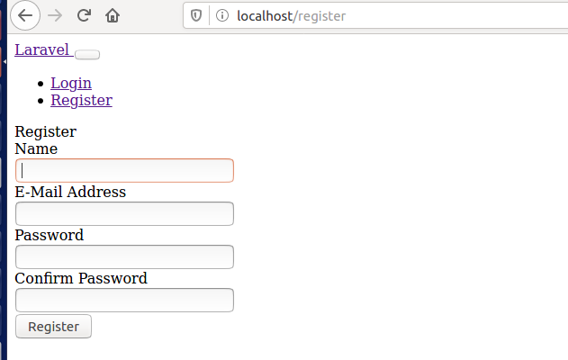
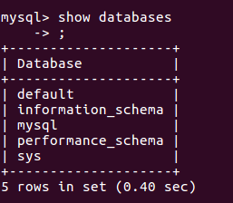
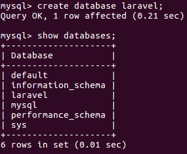
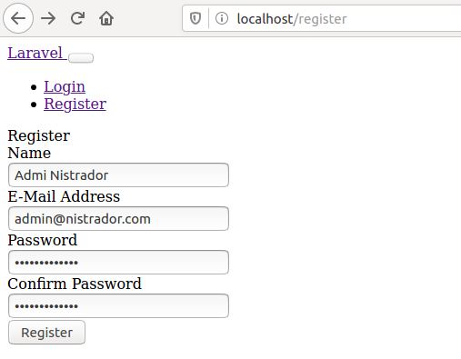
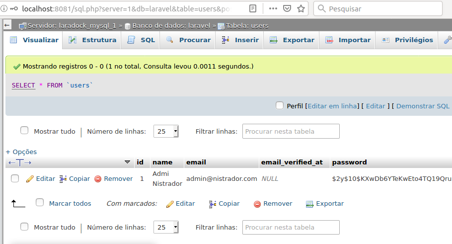

Com os containers nginx, mysql e phpmyadmin rodando e a aplicação funcionando corretamente, seja após clonada do github ou recem criada, iremos fazer as seguintes implementações:
1-Sistema de autenticação com Auth incluindo telas de login, cadastro e home;
2-Crud de categorias e artigos como em um blog, com telas de lista com botão de apagar o registro, pesquisa, visão do registro, cadastro e alteração.
Execute o bash do laradock:
Seu terminal ficará parecido com isto:
Entre na pasta de seu projeto:
Iremos adicionar o sistema de autenticação que o Laravel já traz pronto para nós, mas antes precisamos instalar o UI, que é uma dependência do Auth:
Este comando pode demorar um pouco pois irá baixar alguns pacotes.
O próximo passo é instalar de fato o Auth, junto com todas as telas(views), templates, tabelas e demais arquivos nescessários:
Agora acesse localhost/register no seu navegador de preferência, e voilà! Temos uma tela de cadastro, não muito bonita, porém totalmente funcional! O mesmo pode se dizer sobre a tela de /login!

De nada nos adianta uma tela de cadastro se não tivermos onde salvar os dados. Inclusive, se você tentar realizar um cadastro receberá como resposta um glorioso ERRO SQLSTATE[HY000] [2002].
Isto porque não definimos no banco as tabelas que armazenarão estes dados.
Aliás, se quer definimos um banco!
Inclusive, ainda nem configuramos a conexão com o servidor!
Mas calma, isto é fácil de resolver.
A primeira coisa a fazer é acessar o bash do mysql para criarmos um banco de dados para nossa aplicação.
Saia do bash atual com o comando exit voltando assim ao terminal do Ubuntu.
Execute o bash do mysql:
Seu terminal ficará parecido com isto:
Significando que você está logado como root no container servidor de banco de dados.
Vamos nos conectar ao mysql com o seguinte comando:
O terminal pedirá a senha do usuário root que, por default, também é root.
Com o comando abaixo podemos listar todos os bancos de dados presentes:
Como resposta temos uma lista de bancos presentes no servidor:

Em versões mais recentes o mysql pode não permitir que aplicações como o nosso querido projeto acessem o banco de dados diretamente com o usuário root.
Então vamos nos prevenir criando um novo usuário. Note que nos comandos abaixo '%' pode ser substituído por localhost caso queira que o usuário possa acessar o banco apenas da máquina em que está instalado, mas se assim o fizer nossa aplicação não conseguirá se conectar pois a aplicação está em outro container, ou seja, é como se estivesse em outra máquina:
E dar-lhe todas as permissões:
É possivel criar um usuário com menos permissões, como por exemplo somente permissão para leitura e escrita, mas para nosso projeto iremos mecher na estrutura do banco, apagar e alterar tabelas e registros, então concedemos permissão total, afinal, estamos em um ambiente de desenvolvimento.
Agora, vamos criar uma base esclusiva para nossa aplicação, chamada de "laravel" para facilitar:
Novamente com o comando show databases, agora podemos notar a presença da base laravel:

Base criada, usuário configurado, agora é hora de...
Navegue até a raiz do seu projeto e abra o arquivo .env, é ele que guarda estas configurações.
Dentro do arquivo .env procure pela sessão de conexão com banco de dados e deixe assim:
Sim, nosso usuário se chama "usuário" e sua senha se chama "senha", foi como definimos ao criá-lo.
Salve o arquivo.
Os mesmos dados de acesso podem ser utilizados para acessar o banco de dados via phpmyadmin.
Execute novamente o bash do laradock:
Seu terminal ficará parecido com isto:
Dentro da raiz de nosso projeto, temos a pasta database. Dentro dela temos a migrations, que por sua vez comporta os arquivos de criação das tabelas do banco de dados.
O Artisan utiliza estes arquivos para criar na base que criamos, a "laravel", as tabelas que comportarão os dados principalmente dos usuários, assim nossa tela de cadastros irá enfim ter uma utilidade!
Acesse a pasta do projeto e execute o comando:
Pronto, já podemos terminar aquele cadastro...

E ver pelo phpMyAdmin que está tudo funcionando!
